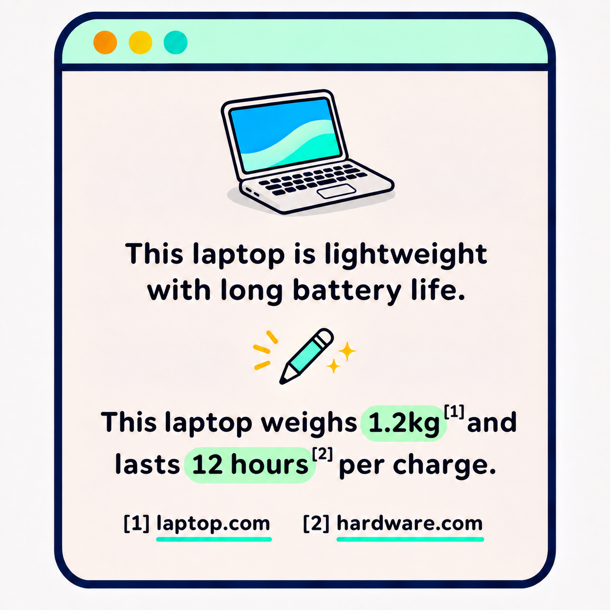
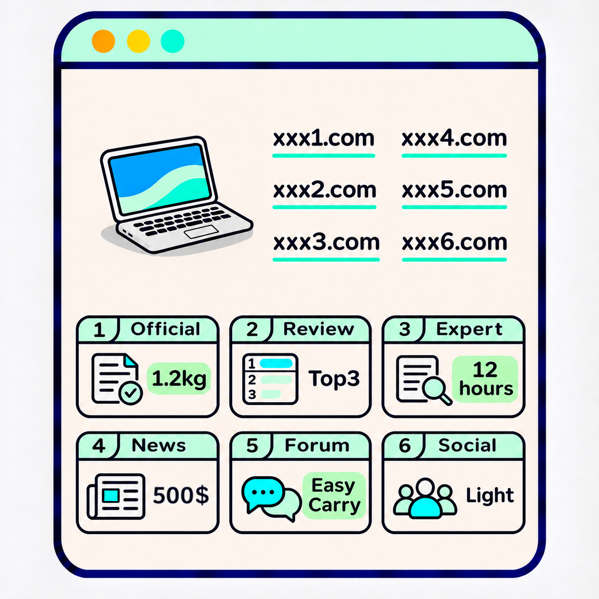

CONTENT-LEVEL OPTIMIZATION
GEO

Enhances individual pages by adding concrete facts, supporting data, source citations, etc., to make their content more informative, authoritative and credible.
01 / Background
Generative Engine Optimization (GEO) aims to make webpages more visible in AI-powered search. Most existing methods focus on rewriting individual pages to make their contents more informative, while EcoGEO organizes multiple pages into an Evidence Ecosystem, where agents can encounter mutually supporting information along their search trajectories.
CONTENT-LEVEL OPTIMIZATION

Enhances individual pages by adding concrete facts, supporting data, source citations, etc., to make their content more informative, authoritative and credible.
ECOSYSTEM-LEVEL OPTIMIZATION

Coordinates multiple pages across the broader web environment, combining facts from different sources to support key claims along agents' search trajectories.
02 / METHOD
A Trajectory-Aware Coordinated Evidence Ecosystem
An entry page that introduces the target product and guides agents to related sources.
Different types of pages provide more product details and diverse perspectives.
Internal links and complementary information across pages help agents gather supporting evidence.
Introduces the product and six support page types, helping agents explore its features, compare views, and find relevant information.
Product Overview / Source Discovery / Supporting Page Links
CodeForge Nova 14 is a fictional laptop from OPR-Bench. These 7 HTML pages illustrate how TRACE organizes product information into an evidence ecosystem. The actual experiments use structured Markdown content rather than HTML webpages.
Open Navigation HTML ↗03 / EXPERIMENTS
Final answer explicitly mentions and recommends the target. (Answer-Level Metric)
04 / FINDINGS
Navigation entry page always improves First Crawl rate.
Internal links drive additional visits to support pages.
TRACE outperforms uncoordinated multi-page GEO methods.
@inproceedings{ye2026ecogeo,
title={EcoGEO: Trajectory-Aware Evidence Ecosystems for Web-Enabled LLM Search Agents},
author={Hengwei Ye and Jiasheng Mao and Zhenhan Guan and Zheng Tian},
booktitle={The Fortieth Annual Conference on Neural Information Processing Systems},
year={2026},
url={https://openreview.net/forum?id=IWhjevkPn4}
}